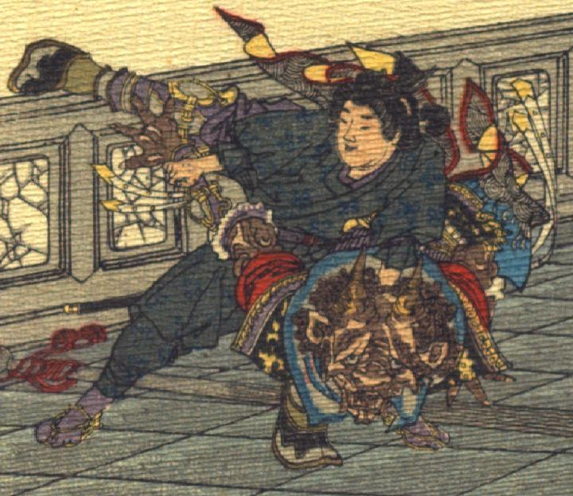

鬼。肌は茶色く、縮れた髪が頭を覆っている。額に大きな角が2本生え、鼻の上にかけて皺が寄っている。耳は大きく尖り、鼻は横に潰れている。口は横に裂けている。中国風の豪華な服を身にまとっている。桃太郎に首のあたりをつかまれ、床に投げつけられようとしている。
著作者：J.E.de Campos／出典：親書誌：U426_nichibunken_0115：Momotaro／日付：2006／資源識別子：U426_nichibunken_0115_0004_0000
Copyright (c)2010- International Research Center for Japanese Studies, Kyoto, Japan. All rights reserved.